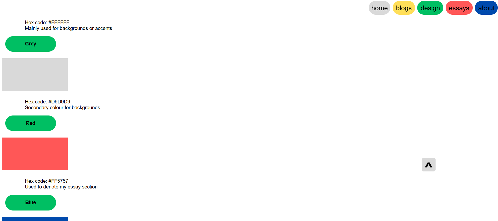
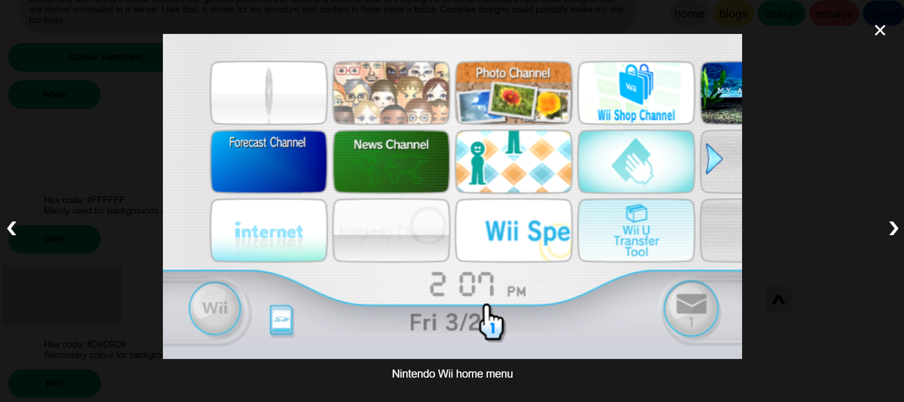
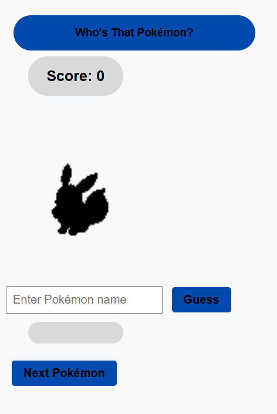
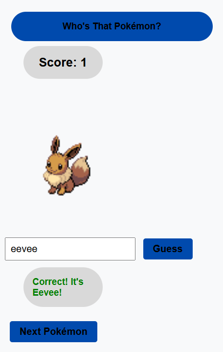

For this section, I wanted to go through my planning and execution of my javascript related features, explaining why I thought that they were necessary and whether I could've done better in my implementation of them. I'll be focusing on the back-to-top button, the lightboxes and the screen transitions.
Functionally, this button allows users to go back to the top of a page that they've scrolled down on. This mitigates tiresome scrolling after they have finished reading the content of a page. It appears on the screen after they have scrolled 100 pixels, and once clicked, it smoothly takes them to the top of the page and then disappears. On it's execution, I think it works quite well most of the time. However, every now and ten, I encounter a bug where it will scroll to the top of the previous section and not to the top of the whole page. I don't know how to fix this error, but it doesn't occur frequently and is quite hard to replicate.

This feature allows users to click on basically every picture on the site to focus on it, whilst dimming the rest of the site and displaying a caption for that image. This is probably the most visually stimulating feature on my site, as pictures are outlined by the colour of the section that they're in and enlarges the image when they hover on it. Then, once they click on the image, it displays the image at its original resolution, whilst displaying the words written as alt text as a caption. When users view the images in this way, they are able to click through all of the images on that page with arrows on the left and right of the screen. To exit this view, user can click the X in the top right corner or anywhere outside the image. Execution wise, I think this feature functions quite well. The only issue is that if the image is quite small, such as my pixel art game's assets which were 64x64, the image can be displayed quite small. I couldn't figure out a more elegant way to do this, because if I set the images to all be displayed at consistent resolution, most of them would end up being stretched or deformed in some way. This is something that I still need to work on.

This feature happens when users traverse between the pages of the site. When a user clicks on a link to go to another page, all of the elements on their current page fade out and then the new page occurs. This was the feature that I struggled with the most and turned out the shoddiest. Originally, I wanted the transition to be more of a swipe across the screen, but then that broke the lightboxes and the layout of the section homepages. Then, I tried to make the transition more of a fade out and fade in, where it would fade out the current page and then fade in the new one, but this created conflicts in the CSS, where both would sort of cancel each other out (or at least I think that's what was happening). So, I settled for the fade out that is currently present on the site. However, the feature can also be slightly buggy if the page takes a little longer to load than other pages, and there seems to be a very slight delay on the new page appearing. This is the feature that I need to work on the most for the next submission.
We were tasked with utilizing APIs within our site, the function was up to us. Originally, I was going to implement a game generator, where users would put in the year that they were born and receive a game that came out in that year. This was under Iman's recommendation to do something game related. However, I'm very interested in creating web games using Javascript. Whilst I don't have the skill to do that yet, I tried to make a toy/prototype. Here is a screenshot of it:
 
This is inspired by the "Who's That Pokemon" segment from the Pokemon animated TV show. In the original version, a silouhette of a Pokemon would be displayed on screen, and viewers would be given a short amount of time to guess what Pokemon is being displayed on screen. Then, the announcer would reveal which Pokemon it is, and the silouhette would be filled out. In the version on my site, the same fundamentals are displayed as users are presented with a silouhette of a Pokemon and the ability to guess what it is by typing their answer in. However, the Pokemon will not be revealed unless they get the answer right, and once they do, their score will go up by one. This API's diffuclty will depend on how much you know Pokemon, but to keep it an easier difficulty I only added the original 151 Pokemon as those are probably the most well known Pokemon (They are also the ones that I know the best). The API that I found was extracted from PokeAPI, which is used by a large number of sites. It holds lots of information of different Pokemon, but what I needed was an image of them and their name. Access the API was not too hard, as we had access to API tutorials given to us in class, and the exemplary scripts. The hard part was figuring out how to add user input into my site. I was able to figure it out after review the MDN documentation and suggestions on Stack Overflow. Adding the score also wasn't so bad, as I used similar fundamentals and syntax to score keeping in C#. In an ideal world, users would be able to have high scores, but I was unable to figure that out in time. The Javascript section is the most fun and interesting part about web development to me, I wish I could think of more ways to implement it on my site.